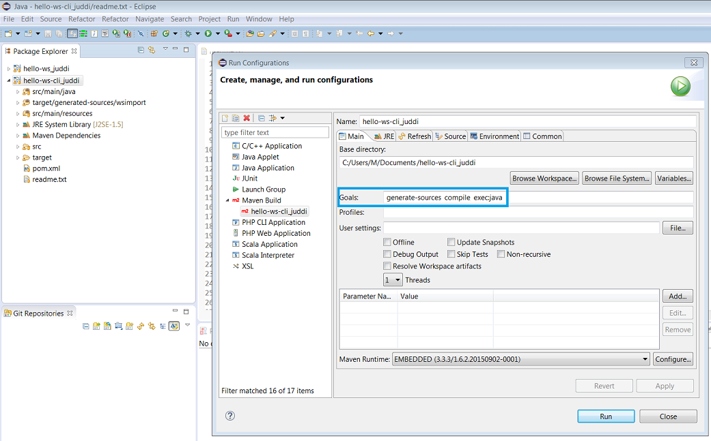
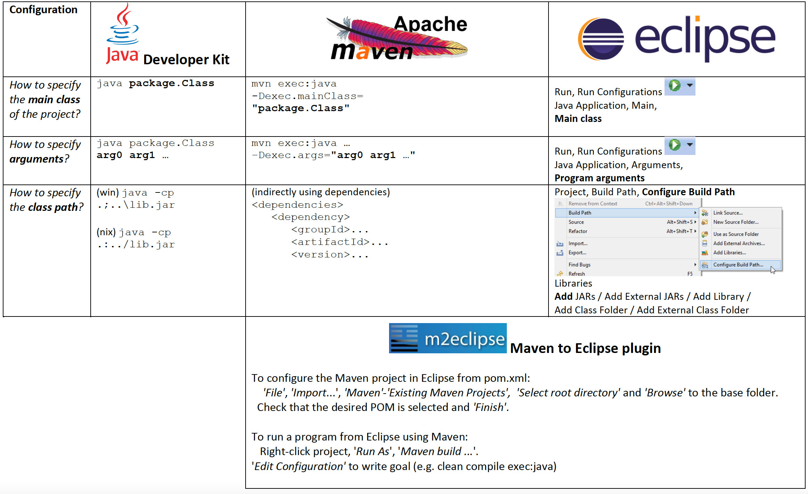

Laboratórios de Sistemas Distribuídos
Bem-vinda/o ao site dos materiais laboratoriais da disciplina de Sistemas Distribuídos da LEIC-T/LETI e LEIC-A do DEI, Instituto Superior Técnico
Antes das aulas arrancarem
Começar por instalar as ferramentas de desenvolvimento que serão usadas nas aulas laboratoriais.
Calendário de aulas de laboratório
| Mês | 2a | 3a | 4a | 5a | 6a | Laboratório 1 | Laboratório 2 |
|---|---|---|---|---|---|---|---|
| fev | 17 | 18 | 19 | 20 | 21 | Apresentação e ferramentas | Java avançado (exceções, concorrência e troca de mensagens) |
| fev | 24 | 25 | 26 | 27 | 28 | gRPC: conceitos base | gRPC: tratamento de erros e métodos remotos bloqueantes |
| mar | 3 | 4 | 5 | 6 | P1 | gRPC: multi-linguagem | Apoio ao projeto, Entrega 1 |
| mar | 10 | 11 | 12 | 13 | 14 | gRPC: Invocações assíncronas | Apoio ao projeto |
| mar | 17 | 18 | 19 | 20 | P2 | Apoio ao projeto | Apoio ao projeto, Entrega 2 |
| mar | 24 | 25 | 26 | 27 | 28 | Apoio ao projeto | Apoio ao projeto |
| mar/abr | 31 | 1 | 2 | 3 | P3 | Apoio ao projeto | Apoio ao projeto, Entrega 3 |
Projeto
Recursos do projeto:
Datas das entregas (via fenix):
- 1ª entrega: 7 março
- 2ª entrega: 21 março
- 3ª entrega: 4 abril
Hora limite para todas as entregas: 23:59.
Instalação das ferramentas de desenvolvimento
As ferramentas de desenvolvimento permitem realizar os exercícios das aulas e depois o projeto. Podem ser usadas nos computadores dos laboratórios, mas é também aconselhável instalar no seu computador pessoal.
Todo o software listado abaixo está disponível em sistemas Windows, Linux e Mac.
Antes de começar
Nos caminhos de ficheiros (paths) em Windows usa-se a barra para trás \ (backslash) como separador; nos caminhos Linux e Mac usa-se a barra para a frente / (slash).
As instalações seguintes devem ser feitas numa pasta que não tenha espaços nem caracteres acentuados no nome, para evitar bugs existentes e ainda não resolvidos, sobretudo nas ferramentas Java em Windows.
Nome de pasta raiz recomendada: C:\Java
Nomes de pastas a evitar: C:\Program Files, C:\Users\João
Uma alternativa à instalação manual é a utilização de gestores de pacotes (package managers) para a instalação e actualização automática de dependências, da maioria das ferramentas necessárias no vosso sistema operativo:
- Em sistemas Windows o package manager sugerido é o Chocolatey.
- Em sistemas MacOS o package manager sugerido é o Homebrew.
- Em sistemas Linux derivados do Debian, como o Ubuntu, o package manager é o APT (Advanced Packaging Tool).
A maior parte das ferramentas necessita de configurar variáveis de ambiente. O procedimento para definir variáveis de ambiente depende do sistema operativo: Windows, Linux e Mac.
Software a instalar
1. Java Developer Kit (JDK)
Este é o ambiente para programação na linguagem Java. Inclui o Java Runtime Environment (JRE).
- Obter JDK 17 LTS
- Instalar
- Configurar:
- Definir variável de ambiente
JAVA_HOMEcom o caminho para a pasta de instalação do JDK - Acrescentar
JAVA_HOME/binà variável de ambiente `PATH - Executar comando
javac -versionpara confirmar
- Definir variável de ambiente
2. Apache Maven (MVN)
Esta é a ferramenta de linha de comando para a gestão do ciclo de vida de uma aplicação, incluindo a gestão de dependências de bibliotecas.
- Obter a versão estável mais recente do Apache Maven
- Instalar
- Configurar:
- Definir variável de ambiente M2_HOME com o caminho para a pasta de instalação
- Acrescentar
M2_HOME/binàPATH - Executar
comando mvn --versionpara confirmar
3. Git
Ferramenta de linha de comando para fazer controlo de versões.
- Obter a versão estável mais recente do Git
- Instalar
- Configurar:
- Executar comando
git --versionpara confirmar
- Executar comando
4. Plataforma de desenvolvimento Java
Existem várias plataformas de desenvolvimento Java à escolha.
Só precisam de escolher uma delas. Podem até escolher uma que não esteja nesta lista!
No entanto, devem ter em atenção que os recursos disponíveis neste site dos laboratórios de SD assumem o Eclipse como IDE por omissão. Portanto, encontrarão mais documentação e apoio a esse IDE.
-
Eclipse IDE for Java Developers
- Obter a versão estável mais recente do Eclipse IDE for Java Developers
- Pode obter o installer e depois especificar que pretende a opção acima. Atenção: 32 vs 64 bit - a versão do Eclipse deve concordar com o JDK instalado, ou seja, para o JDK 32 bit, usar o Eclipse 32 bits, para o JDK 64 bit, usar o Eclipse 64 bit.
- Instalar.
- Se precisar, consulte as instruções.
- Configurar:
- Especificar o JDK como Standard VM (em vez do JRE)
Nota: só deverá ser necessário este passo em Windows.
- Window -> Preferences -> Java -> Installed JREs -> Add...
- Indicar o caminho até ao diretório do JDK: ex.
C:\Java\jdk-17.0.2 - Confirmar que as "Installed JREs" apenas fazem referência ao JDK instalado nas opções ativadas
- Especificar o JDK como Standard VM (em vez do JRE)
Nota: só deverá ser necessário este passo em Windows.
-
IntelliJ IDEA
- Obter a Toolbox da JetBrains para gerir todas as ferramentas JetBrains facilmente.
- Para instalar o Toolbox no Linux, sigam os passos. Para instalá-lo no Windows e MacOS, basta executar o executável obtido.
- Na Toolbox instalem o IntelliJ Ultimate, para isso deve obter uma licença de estudante, a qual pode ser obtida preenchendo o formulário.
- Após instalarem o IntelliJ, recomendamos instalar o plugin google-java-format para maior legibilidade do código que produzem.
-
Visual Studio Code
- Obter a versão mais recente
- Instalar
- Instalar extensões para programação em Java
Dúvidas ou erros?
Se tiver dificuldades, pode pedir ajuda no Moodle mas, antes, consulte a lista de respostas a perguntas frequentes.
Se detetar algum erro nas instruções acima, avise-nos!
Perguntas frequentes sobre as ferramentas
Perguntas sobre Java
[IMPORTANTE] Existe alguma restrição sobre a directoria de instalação do software?
Sim, infelizmente devido a diversos bugs em ferramentas, o software não funciona corretamente em pastas cujo caminho tenha espaços e/ou caracteres acentuados (sobretudo em Windows). Exemplos de pastas problemáticas:
C:\program files
C:\users\André
C:\users\Alice Silva
Dado este problema a sugestão é instalar o software numa pasta sem acentos nem espaços, como C:\java\.
Devem-se instalar exatamente as versões pedidas ou podem ser outras?
Sim, devem procurar instalar as versões pedidas de forma a terem um ambiente igual (ou o mais parecido possível) com o ambiente de referência (dos laboratórios).
Se não for possível encontrar a versão exata, pode-se instalar a versão mais próxima disponível.
Como confirmar se estou a usar as versões certas das ferramentas?
Abrir uma consola e executar os seguintes comandos:
$ java -version`
$ javac -version
$ mvn -version
Pergunta: Na RNL (laboratórios da Alameda), que versões do Java estão disponíveis e como as posso usar?
Ver resposta na página da RNL.
Como confirmar se o PATH está correcto?
- Abrir uma consola Linux e executar
$ echo $PATH - Abrir uma consola Windows e executar
$ echo %PATH%
Como resolver o seguinte problema na compilação? Exception in thread "main" java.lang.Error: Unresolved compilation problems
As classes foram corrompidas por diferentes compiladores em simultâneo (por ex. Eclipse e Maven). Para corrigir ir a Eclipse -> Menu 'Project', 'Clean', 'clean all projects". Depois, correr mvn clean.
Perguntas sobre Maven
O meu nome de utilizador tem acentos ou espaços e preciso de mudar a localização do repositório local Maven. Como se faz?
O repositório local do Maven é a pasta onde são guardadas todas as dependências obtidas pelo Maven.
Por omissão, a localização do repositório local é:
- ~/.m2 (Unix/Mac)
- C:\Users\Username\.m2 (Windows)
Para alterar a configuração, editar o ficheiro conf\setting.xml que está na pasta de instalação do Maven (tipicamente apontada pela variável de ambiente M2_HOME).
Não esquecer também de atualizar a configuração do repositório Maven no seu IDE. Por exemplo, no Eclipse, aceder a Window - Preferences - Maven - User Settings e indicar a nova configuração.
Como posso consultar o effective POM de um projeto Maven?
O effective POM é o resultado da combinação do POM do projeto com os valores das propriedades por omissão. É útil para perceber todas as definições que são assumidas pela ferramenta, como valores de propriedades, por exemplo.
Pode-se consulta através do seguinte comando:
$ mvn help:effective-pom
Existe forma de consultar a árvore de dependências de um projeto Maven?
Sim, através do seguinte comando:
$ mvn dependency:tree
Como remover o aviso de character encoding do Maven?
Acrescentar a seguinte configuração ao pom.xml:
...
<properties>
<project.build.sourceEncoding>UTF-8</project.build.sourceEncoding>
<project.reporting.outputEncoding>UTF-8</project.reporting.outputEncoding>
...
Como remover o aviso Warning: killAfter is now deprecated" do Maven?
Para remover este aviso (inofensivo) pode-se acrescentar a seguinte configuração ao pom.xml:
<plugin>
<groupId>org.codehaus.mojo</groupId>
<artifactId>exec-maven-plugin</artifactId>
...
<configuration>
<killAfter>-1</killAfter>
...
</configuration>
</plugin>
Como definir a versão do Java considerada pelo Maven?
Qual a diferença entre exec:java e appassembler ?
mvn exec:java corre dentro do maven e tem os argumentos definidos no pom.xml com bons valores por omissão (opção preferida para desenvolvimento).
mvn package appassembler:assemble corre de forma autónoma do Maven e necessita que sejam indicados os argumentos (opção preferida para demonstração)
target/bin/appassembler/... .bat arg0 arg1 ...
Via Eclipse também se pode correr, depois de compilado, definindo-se os argumentos nas "Run Configurations".
Como se faz a partilha de código através de módulos Maven ?
Para o fazer, criar um projeto à parte (ex. my-library).
No pom.xml, definir as coordenadas groupId (ex. example), artifactId (ex. my-library) e version (ex. 1.0-SNAPSHOT).
Para disponibilizar o módulo no repositório Maven local (~/.m2), fazer: mvn install.
Para usar o módulo noutro projeto, basta acrescentar a dependência, indicando as coordenadas groupId, artifactId e version tal como se faz em relação a módulos que estão no repositório Maven central.
É possível ter POMs hierárquicos? Como se usam?
O Maven tem dois conceitos hierárquicos: modules e parent.
<project ...>
<!-- the parent relation -->
<parent>
<groupId>example</groupId>
<artifactId>parent</artifactId>
<version>1.0.0-SNAPSHOT</version>
</parent>
<artifactId>module1</artifactId>
<!-- the modules -->
<modules>
<module>submodule1</module>
<module>submodule2</module>
</modules>
</project>
A relação parent indica que configurações de propriedades, repositórios e plug-ins devem ser herdadas do projeto pai.
Um module indica que o subprojeto deve ser incluído no processamento do ciclo de vida do projeto de topo.
Dúvidas sobre Eclipse
Pergunta: Consigo compilar e executar os exercícios de código com o Maven no terminal, mas como o faço dentro do Eclipse?
O Eclipse, depois de instalado seguindo o guia, consegue invocar ações de Maven.
Para um projeto Maven no Eclipse, é necessário criar configurações de Maven Build, como é descrito em seguida:
Package Explorer: Right-click no nome do projeto -> Run As -> Run Configurations... -> Maven Build -> New launch configuration

Especificando em Base directory: o caminho para o diretório do projeto e em Goals: a sequência de ações Maven a desempenhar, pode clicar em Apply e a partir daí poderá executar com esta parametrização através do botão Run.
Neste exemplo específico, ao clicar em Run serão executados para o projeto hello-ws-cli_juddi os comandos:
mvn generate-sources
mvn compile
mvn exec:java
Já segui todas as instruções no guia de software mas mesmo assim o Eclipse não consegue compilar código Java, o que poderá ser o problema?
É possível que, apesar do JDK estar instalado, o Eclipse esteja a apontar para um módulo JRE (Java Runtime Environment), que apenas permite executar programas Java mas não compilar. Para resolver esta questão, por exemplo em Windows, é necessário seguir os seguintes passos:
- Ir a Window -> Preferences -> Java -> Installed JREs -> Add...
- Indicando o diretório do JDK instalado, deve obter o seguinte resultado (ajustando a versão):

Carregue em Apply, OK. A partir de agora, o Eclipse está configurado para invocar as ferramentas de compilação de Java, tais como o javac.
Já configurei o Eclipse para usar o JDK mais recente, mas mesmo assim quando importo um projeto Maven, o Eclipse assume que é para usar J2SE5 ou outra qualquer versão estranha, como corrigir isto?
Para assegurar que o projeto Maven funciona como esperado, recomenda-se dar uma indicação explícita da versão de JDK a usar para o projeto.
Para resolver esta questão, é necessário especificar a versão no pom.xml do projeto, inserindo as tags
maven.compiler.source e maven.compiler.target aninhadas na tag properties.
Exemplo concreto, aplicado ao pom.xml do projeto hello-ws-cli_juddi:
...
</dependencies>
<properties>
<project.build.sourceEncoding>UTF-8</project.build.sourceEncoding> <mainclass>example.cli.HelloClient</mainclass>
<maven.compiler.source>1.8</maven.compiler.source> <maven.compiler.target>1.8</maven.compiler.target>
...
</properties>
<build>
...
Quando tento executar o Eclipse este pára com erro 13. Como resolver?
Não vale a pena reinstalar o Eclipse.
Basta editar a PATH e remover C:\ProgramData\Oracle\Java\javapath caso exista, e garantir que o caminho certo é o primeiro na lista de caminhos da PATH. Se existirem outros caminhos devido a atualizações, estes devem ser removidos.
Perguntas sobre gRPC
Não consigo correr o protocno meu portátil Mac. Como resolver?
O compilador do gRPC (protoc) tem uma "open issue" com os processadores M1 da Apple. Quando se tenta executar o protoc (por exemplo, fazendo mvn install num projeto contendo o contrato de um gRPC), ocorre um erro.
Para contornar este problema, devem procurar estas duas tags <protocArtifact> no POM:
<protocArtifact>com.google.protobuf:protoc:${version.protoc}:exe:${os.detected.classifier}</protocArtifact>
<pluginId>grpc-java</pluginId>
<pluginArtifact>io.grpc:protoc-gen-grpc-java:${version.grpc}:exe:${os.detected.classifier}</pluginArtifact>
E substituí-las por estas:
<protocArtifact>com.google.protobuf:protoc:${version.protoc}:exe:osx-x86_64</protocArtifact>
<pluginId>grpc-java</pluginId>
<pluginArtifact>io.grpc:protoc-gen-grpc-java:${version.grpc}:exe:osx-x86_64</pluginArtifact>
1. Apresentação e ferramentas (Java, Maven, IDE)
Objetivos desta aula:
- Apresentação da/o docente e formação de grupos de projeto
- Familiarizar-se com as ferramentas de desenvolvimento que usaremos na cadeira
Apoio ao trabalho laboratorial durante o período
O professor do laboratório vai acompanhar o vosso percurso ao longo de todo o semestre. É importante ficar a conhecê-lo desde já. :-)
O apoio a dúvidas fora das aulas é feito através do Moodle de SD, onde é possível colocar perguntas e receber respostas, quer de colegas, quer dos professores. Se não conseguir aceder ao Moodle, peça ajuda ao docente laboratorial.
Inscrição de grupo
O trabalho de laboratório e no projeto é realizado em grupo, com 3 elementos. Os grupos terão de ser formados entre estudantes inscritos no mesmo turno de laboratório.
Para fazer:
- Para registar o grupo, indicar na aula, a pedido do professor, os números de aluno IST e os nomes de utilizadores GitHub de todos os membros
- Caso ainda não tenha uma conta GitHub, deve criar uma
- Atualize a sua foto na conta de perfil, para que possa ser reconhecido
- Aproveite e atualize também a foto do Fénix
Caso ainda não tenha grupo completo:
- Compareça no seu turno de laboratório e fale com colegas na mesma situação. Esta é a forma mais eficaz de formar grupo!
- Procure colegas no fórum no Moodle, onde os docentes criarão um tópico de discussão sobre este tema. Deixe lá a indicação de que procura elemento(s) para formar grupo ou respondendo a mensagens lá publicadas por colegas. Indique sempre o(s) turno(s) que pode frequentar e onde ainda há vagas.
- Note bem: a formação do grupo é da responsabilidade dos estudantes; os professores apenas fazem o registo.
Familiarização com as ferramentas de desenvolvimento
As ferramentas para o desenvolvimento do projeto são: Java (linguagem e plataforma), Maven (construção), e um IDE (ambiente integrado de desenvolvimento) de Java.
No resto desta aula estudremos cada uma das ferramentas. A tabela seguinte resume as utilizações mais comuns do JDK, Maven, e de um IDE (e.g., o Eclipse), que entenderemos melhor ao longo desta aula.

Atenção: antes de começar, é necessário já ter o software instalado.
Java
O JDK (Java Developer Kit) é um conjunto de ferramentas para programação na linguagem Java. As mais importantes são o javac que compila os programas e o java que lança as aplicações.
Os javac e java são suficientes para construir pequenos programas. No entanto, para programas de maior dimensão, é muito útil ter:
- Uma ferramenta que dê suporte a todas as tarefas de forma integrada, incluíndo a gestão de dependências: Maven.
- Um ambiente de desenvolvimento (IDE) que apoie o programador em todas as tarefas (por exemplo, Eclipse, IntelliJ, VSCode, ou outro).
Maven
A ferramenta Maven é a mais importante logo a seguir ao próprio JDK. A utilização do Maven é obrigatória em SD para permitir a construção dos projetos de forma automática na linha de comandos.
O Maven desempenha o papel muito importante de automatizar toda a construção do código e de explicitar dependências de outros programas. Todos os programas devem ter a configuração Maven no ficheiro pom.xml para que possam ser (re)construídos de forma repetível. Os programas devem ter também um ficheiro README com instruções de construção e de execução.
Antes de avançar:* No resto desta secção, aprender Maven usando este projeto de exemplo, que utiliza o Maven para compilar e executar o código Java. Antes de avançar, faça Clone or Download.
Project Object Model (POM)
O Maven é uma ferramenta Java para a gestão de projetos que fornece aos programadores uma estrutura completa para suportar o ciclo de desenvolvimento de uma aplicação. Em particular, o Maven trata da compilação, distribuição, documentação, e colaboração em equipa, entre outras atividades.
A estrutura e conteúdo do projeto Maven são declaradas num ficheiro XML, chamado POM (Project Object Model) pom.xml, que é a unidade fundamental deste sistema. Cada POM descreve um módulo.
A [documentação sobre POM, pode ser consultada aqui].(http://maven.apache.org/pom.html)
A estrutura de um ficheiro POM é a seguinte:
<project xmlns="http://maven.apache.org/POM/4.0.0"
xmlns:xsi="http://www.w3.org/2001/XMLSchema-instance"
xsi:schemaLocation="http://maven.apache.org/POM/4.0.0
http://maven.apache.org/xsd/maven-4.0.0.xsd">
<modelVersion>4.0.0</modelVersion>
<!--
Os elementos de configuração básicos permitem identificar unicamente o projeto,
especificar dependências e definir propriedades (variáveis).
-->
<groupId>...</groupId>
<artifactId>...</artifactId>
<version>...</version>
<packaging>...</packaging>
<dependencies>...</dependencies>
<parent>...</parent>
<dependencyManagement>...</dependencyManagement>
<modules>...</modules>
<properties>...</properties>
<!--
Os elementos de configuração de construção permitem declarar
a estrutura de pastas do projeto e a gestão de extensões (plugins).
-->
<build>...</build>
<reporting>...</reporting>
<!--
Informações adicionais do projeto
-->
<name>...</name>
<description>...</description>
<url>...</url>
<inceptionYear>...</inceptionYear>
<licenses>...</licenses>
<organization>...</organization>
<developers>...</developers>
<contributors>...</contributors>
<!--
Elementos de configuração do ambiente
-->
<issueManagement>...</issueManagement>
<ciManagement>...</ciManagement>
<mailingLists>...</mailingLists>
<scm>...</scm>
<prerequisites>...</prerequisites>
<repositories>...</repositories>
<pluginRepositories>...</pluginRepositories>
<distributionManagement>...</distributionManagement>
<profiles>...</profiles>
</project>
Experimente: Estude cada porção do POM no nosso exemplo e tente entender o seu significado.
Estrutura típica de pastas
Assumindo que ${basedir} corresponde à localização do projeto Maven, a estrutura de pastas associada é a seguinte:
${basedir}/src/main/java- código fonte${basedir}/src/main/resources- recursos${basedir}/src/test- código de teste${basedir}/target- A pasta target é temporária e serve para guardar as classes do programa compiladas (*.class) e outros ficheiros auxiliares - pode ser descartada a qualquer momento e não deve ser guardada em controlo de versões
Experimente: confirme no mesmo exemplo de projeto onde estas pastas se encontram. É natural que não encontre todas as pastas, pois nem todas são usadas sempre.
Ciclo de vida e comandos
Em Maven, o processo de construção é dividido em ciclos de vida de construção, fases e objetivos. Um ciclo de vida de construção é composto por uma sequência de fases de construção e por sua vez cada fase de construção consiste numa sequência de objetivos.
Por exemplo, o ciclo default inclui as seguintes fases (lista completa de fases):
- validate - verifica se projecto está correcto e toda a informação está disponível
- compile - compila o código fonte
- test - testa o código fonte compilado
- package - pega no código compilado e empacota-o num formato que se pode partilhar/distribuir, como JAR.
- integration-test - processa e integra o pacote se necessário num ambiente onde testes de integração possam correr
- verify - corre verificações para confirmar que o pacote é válido e corresponde aos critérios de qualidade definidos
- install - instala o pacote no repositório local, para poder ser usado localmente como dependência noutros projectos
- deploy - copia pacote final para um repositório remoto
Uma execução no Maven consiste em passar um argumento ao executável mvn. Este argumento corresponde ao nome dum ciclo de vida de construção, fase ou objetivo.
Se um ciclo de vida solicitado é executado, todas as fases de construção deste ciclo de vida são executadas. Por conseguinte, se uma fase de construção solicitada é executada, todas as fases de construção que a antecedem na sequência pré-definida de fases de construção são também executadas.
A lista seguinte apresenta alguns dos comandos Maven mais frequentes:
mvn clean- limpa a pasta temporáriamvn compile- compila o código do programamvn compile exec:java- compila o código do programa e executa a classe definida como principal nopom.xmlmvn test- compila o código do programa e executa os testesmvn verify- compila o código do programa e executa os testes de integração (e.g. cliente-servidor)
Experimente: experimente executar todos os comandos da lista acima com o nosso exemplo. Estude o que se passa em cada um deles. Nota: os últimos dois comandos não têm efeito neste projeto, pois ele não inclui testes.
Plugins de construção
Os plugins de construção (build plugins) são utilizados para inserir objetivos adicionais numa fase de build, caso seja necessário executar um conjunto de ações no projeto que não estejam cobertos pelas fases e objetivos padrão do Maven. Os plugins podem ser adicionados ao ficheiro POM. Para além dos plugins padrão disponibilizados, outros podem também ser implementados em Java.
Experimente:
-
No nosso POM de exemplo é definido um plugin.
- Onde?
- Experimente alterar os valores dos argumentos lá especificados e execute de novo o comando
mvn exec:java.
-
O exemplo tem variantes que podem ser consultadas noutros ramos (branches) do Git
appassembler: permite gerar scripts de lançamento da aplicação em Linux e Windows- Ver código alternativo e comparar com exemplo base
config: utiliza ficheiro com propriedades de configuração, algumas delas preenchidas dinamicamente pelo Maven- Ver código alternativo e comparar com exemplo base
- Experimente usar estas funcionalidades de ambas as variantes.
Dependências e repositórios
Um dos primeiros objetivos executados pelo Maven é a verificação das dependências do projeto. As dependências são arquivos externos JAR (bibliotecas Java) necessárias para o projeto.
Se as dependências não forem encontrados no repositório local, isto é, numa pasta no disco rígido do computador local, o Maven descarrega-as de um repositório central para o repositório local.
Por omissão, o repositório local encontra-se na pasta %USER_HOME%.
Contudo, é possível especificar um repositório local onde Maven irá guardar os artefactos. Por exemplo:
<settings xmlns="http://maven.apache.org/SETTINGS/1.0.0"
xmlns:xsi="http://www.w3.org/2001/XMLSchema-instance"
xsi:schemaLocation="http://maven.apache.org/SETTINGS/1.0.0 http://maven.apache.org/xsd/settings-1.0.0.xsd">
<localRepository>C:/RepositorioLocal</localRepository>
...
Um exemplo de uma dependência é o JUnit, que como pode ser vista abaixo.
<project>
...
<dependencies>
<dependency>
<groupId>junit</groupId>
<artifactId>junit</artifactId>
<version>4.12</version>
<scope>test</scope>
</dependencies>
</project>
Os três primeiros campos identificam a dependência. O parâmetro scope especifica que a dependência apenas existe para os testes. Isto significa que o Maven vai providenciar um classpath sem o JUnit para compilação do código principal e um classpath com o JUnit (na versão indicada) para compilação e execução do código de testes.
As dependências podem ser pesquisadas em motores de pesquisa como este repositório.
Para o caso de projetos em desenvolvimento com inúmeros módulos (por exemplo: módulos A, B e C), com dependências entre eles, o conceito de SNAPSHOT é muitas vezes usado. Se um módulo A está em desenvolvimento rápido, e a criar novas versões com muita frequência, o sufixo -SNAPSHOT é adicionado no elemento <version>.
Exemplo do pom.xml de A:
<project>
...
<groupId>exemplo</groupId>
<artifactId>modA</artifactId>
<version>1.0.0-SNAPSHOT</version>
...
</project>
Assim, cada vez que o módulo A enviar uma SNAPSHOT do seu código actualizado para o repositório, vai substituir a versão que existia anteriormente. Por sua vez, os outros módulos, B e C, que dependem de A escolhem essa mesma versão SNAPSHOT como dependência.
O pom.xml de B e C iriam conter:
<project>
...
<dependency>
<dependency>
<groupId>exemplo</groupId>
<artifactId>modA</artifactId>
<version>1.0.0-SNAPSHOT</version>
<scope>test</scope>
</dependency>
</dependencies>
</project>
Deste modo, sempre que os módulos B e C são construídos, o Maven automaticamente actualiza o módulo A, obtendo o JAR correspondente ao SNAPSHOT mais recente.
Experimentaremos esta matéria daqui a algumas aulas, quando precisarmos de compor projetos com módulos e dependências entre eles.
Java IDE
Tanto o Eclipse, o IntelliJ como o VSCode podem ser configurados em cima do JDK ou do Maven. Veja abaixo algumas instruções (basta ver para o seu IDE favorito).
-
Maven no Eclipse:
-
Se já tiver um projeto com os ficheiros de configuração do Maven (
pom.xml):- 'File', 'Import...', 'Maven'-'Existing Maven Projects
- 'Select root directory' e 'Browse' até à pasta do projecto.
- Confirmar que está tudo como desejado e 'Finish'.
-
Se não existirem os ficheiros de configuração do Maven:
- Criar um 'Project', do tipo 'Maven Project'.
- Selecionar 'Create a simple project (skip architype selection)'.
- Remover a seleção 'Use default Workspace location' e 'Browse' até à pasta raiz do projecto (pasta mãe das 'sources').
- Preencher os campos em 'New Maven Project'.
-
Para executar ou depurar (debug) o projeto Maven no eclipse:
- Carregar com o botão direito do rato sobre o projeto.
- Seleccionar 'Run As' ou 'Debug As' e depois carregar em 'Maven build ...'.
- Indicar os objectivos (p.ex: compile, package) do ciclo de vida de construção em 'Edit Configuration'.
-
Experimente:
- Experimente as funcionalidades de depuração (debug) do seu IDE favorito:
- Criar um ponto de paragem (breakpoint) no programa e fazer debug
- Alterar os argumentos do programa (-Dexec.args="(...)" pode ser usado para especificar os argumentos do programa quando executado através do comando mvn) e inspecionar as variáveis durante a execução
2. Java avançado (exceções, concorrência e troca de mensagens)
Objetivos desta aula:
- Programação concorrente em Java
- Exceções em Java
- Troca de mensagens usando sockets em Java
Programação concorrente em Java
A linguagem Java permite a programação de programas concorrentes com múltiplas threads.
Aqui está um exemplo de um programa que, no seu método Main, cria e inicia uma thread.
A thread é um objeto que implementa Runnable.
public class HelloRunnable implements Runnable {
public void run() {
System.out.println("Hello from a thread!");
}
public static void main(String args[]) {
(new Thread(new HelloRunnable())).start();
}
}
Para saber mais, consulte esta documentação.
Como as threads partilham objetos, que os seus dados estão coerentes. Caso a sincronização não seja implementada, pode ocorrer interferência entre threads, levando a situações de incoerência nos dados partilhados. Por outro lado, a presença de mecanismos de sincronização pode originar contenção quando duas ou mais threads tentam aceder ao mesmo recurso em simultâneo.
Sincronização em Java
De seguida resumimos as principais primitivas de sincronização disponíveis em Java. Para saber mais sobre este tema, recomendamos que consulte este tutorial.
Cada objeto Java tem um trinco lógico (mutex) implícito, que pode ser (implicitamente) adquirido através da primitiva synchronized.
A primitiva synchronized pode ser aplicada a métodos da classe de um objeto. Ao fazermos isso, qualquer chamada a um método de uma instância dessa classe é executada em exclusão mútua (em relação a outras chamadas concorrentes a outros métodos synchronized da mesma instância).
Um método sincronizado adquire o trinco implícito do objeto no início de execução e liberta-o no fim.
O seguinte exemplo mostra uma utilização da sincronização em Java:
public class MySynchronizedCounter {
private int c = 0;
public synchronized void increment() {
c++;
}
public synchronized void decrement() {
c--;
}
public synchronized int value() {
return c;
}
}
Os métodos increment(), decrement() e value() da classe MySynchronizedCounter estão sincronizados. Isto significa que, caso um dos três métodos seja invocado, o trinco do objeto é adquirido, e se houver outra tarefa a tentar aceder a qualquer um deles, ficará bloqueada à espera que o recurso/método seja libertado pela primeira invocação.
Também é possível usar o synchronized para adquirir o trinco apenas numa parte do código.
// acquire lock of object referenced by 'this'
synchronized (this) {
// access shared variables protected by lock
}
// release lock
No contexto de uma região synchronized, é também possível utilizar variáveis de condição, usando as primitivas wait, notify e notifyAll.
Concorrência com coleções
As coleções são objetos que armazenam vários outros objetos. Algumas das coleções mais conhecidas no Java são: ArrayList, LinkedList, HashMap, HashSet, TreeMap, TreeSet, etc.
Cada coleção implementa uma interface que dita o tipo de acesso esperado:
Listé uma lista (preserva a ordem e pode haver repetidos);Seté um conjunto (sem ordem nem repetidos);Mapestabelece uma associação entre chave e valor;- etc.
Por omissão, as coleções não são sincronizadas, pois assim conseguem melhor desempenho sequencial.
Para situações em que é necessário sincronizar os acessos às coleções, existem versões sincronizadas que apenas permitem um acesso de cada vez.
Para construir uma coleção sincronizada usa-se um método especial da classe Collections, que cria a nova coleção "embrulhando" uma coleção do mesmo tipo:
List synchronizedList = Collections.synchronizedList(regularList);
Posteriormente, foram acrescentadas ao Java coleções concorrentes (Concurrent Collections no pacote java.util.concurrent), que utilizam estruturas de dados sofisticadas, desenhadas de raiz para garantir a consistência da coleção mesmo quando esta é acedida concorrentemente por muitas tarefas. Exemplos destas coleções concorrentes são: ConcurrentHashMap, CopyOnWriteArrayList, e CopyOnWriteHashSet.
No exemplo seguinte constroi-se um mapa optimizado para acessos concorrentes:
Map<String,Object> map = new ConcurrentHashMap<>();
Exceções
O tratamento de exceções é também um aspeto muito importante, e que irá ser especialmente importante para lidar com problemas de comunicação.
As exceções são usadas na linguagem Java para assinalar que algo não correu como esperado.
São classes que herdam de java.lang.Exception e cujos objetos podem ser atirados (throw) e apanhados (caught).
As exceções que herdam de java.lang.RuntimeException (RTE) são chamadas exceções não verificadas (unchecked exceptions). Neste caso, o compilador não obriga o programador a declarar se apanha ou se atira. Por este motivo, qualquer linha de código pode atirar uma exceção destas. A mais conhecida é a NullPointerException (NPE).
As exceções que herdam de java.lang.Exception são chamadas exceções verificadas (checked exceptions), no sentido, em que a sua utilização é verificada pelo compilador. Nestes casos é preciso explicitar se se apanha a exceção (catch) ou se se lança (throws). Normalmente, se não se vai tentar recuperar a exceção, pode simplesmente dizer que se atira. É preferível atirar do que fazer um falso tratamento de exceção.
Abordagens ao tratamento de exceções
Podemos ter as seguintes abordagens em relação às exceções:
- Deixar-passar (pass-through)
- Apanhar-e-tratar (catch-and-handle)
- Apanhar-e-ignorar! (swallow!)
- Apanhar-registar-e-atirar (logging)
- Apanhar-embrulhar-e-atirar (wrapping)
- Apanhar-e-recuperar (recovery)
A abordagem 'apanhar-e-ignorar' é claramente errada porque perde informação e torna muito mais difícil diagnosticar e resolver problemas.
Exceções impressas na consola
Os outputs seguintes foram produzidos por uma aplicação que usa sockets para comunicação, e ilustram diversas situações.
Na situação abaixo, o servidor tenta criar o socket com um porto fora do intervalo [0;65535].
java.lang.reflect.InvocationTargetException
at sun.reflect.NativeMethodAccessorImpl.invoke0(Native Method)
at sun.reflect.NativeMethodAccessorImpl.invoke(NativeMethodAccessorImpl.java:62)
at sun.reflect.DelegatingMethodAccessorImpl.invoke(DelegatingMethodAccessorImpl.java:43)
at java.lang.reflect.Method.invoke(Method.java:497)
at org.codehaus.mojo.exec.ExecJavaMojo$1.run(ExecJavaMojo.java:293)
at java.lang.Thread.run(Thread.java:745)
Caused by: java.lang.IllegalArgumentException: Port value out of range: 65536
at java.net.ServerSocket.<init>(ServerSocket.java:232)
at java.net.ServerSocket.<init>(ServerSocket.java:128)
at example.SocketServer.main(SocketServer.java:24)
... 6 more
Na situação abaixo, o cliente tenta ligar ao servidor por meio dum porto incorreto e não consegue.
java.lang.reflect.InvocationTargetException
at sun.reflect.NativeMethodAccessorImpl.invoke0(Native Method)
at sun.reflect.NativeMethodAccessorImpl.invoke(NativeMethodAccessorImpl.java:62)
at sun.reflect.DelegatingMethodAccessorImpl.invoke(DelegatingMethodAccessorImpl.java:43)
at java.lang.reflect.Method.invoke(Method.java:497)
at org.codehaus.mojo.exec.ExecJavaMojo$1.run(ExecJavaMojo.java:293)
at java.lang.Thread.run(Thread.java:745)
Caused by: java.net.ConnectException: Connection refused: connect
at java.net.DualStackPlainSocketImpl.connect0(Native Method)
at java.net.DualStackPlainSocketImpl.socketConnect(DualStackPlainSocketImpl.java:79)
at java.net.AbstractPlainSocketImpl.doConnect(AbstractPlainSocketImpl.java:345)
at java.net.AbstractPlainSocketImpl.connectToAddress(AbstractPlainSocketImpl.java:206)
at java.net.AbstractPlainSocketImpl.connect(AbstractPlainSocketImpl.java:188)
at java.net.PlainSocketImpl.connect(PlainSocketImpl.java:172)
at java.net.SocksSocketImpl.connect(SocksSocketImpl.java:392)
at java.net.Socket.connect(Socket.java:589)
at java.net.Socket.connect(Socket.java:538)
at java.net.Socket.<init>(Socket.java:434)
at java.net.Socket.<init>(Socket.java:211)
at example.SocketClient.main(SocketClient.java:32)
... 6 more
As linhas mais importantes dos outputs são as começadas por Caused by. É aí que se podem encontrar as mensagens das exceções. Dado que uma exceção pode ter outra exceção aninhada (cause) pode ser necessário consultar várias linhas para perceber o que causou a exceção de topo.
As linhas começadas por at indicam o contexto de execução. Observando estas linhas é possível ver o conteúdo da pilha de execução do programa, que diz que parte do código estava a chamar que outra parte.
Código de tratamento de exceções
O seguinte código mostra maus exemplos de tratamento de exceções.
// ANTI-padrão 'apanhar-e-ignorar!'
// Ignorar a exceção sem dizer nada a ninguém.
// Evitar!
try {
doSomething();
} catch(Exception e) {
}
...
// ANTI-padrão 'apanhar-imprimir-e-ignorar!'
// Imprimir o stack trace, não resolve nada.
// O programa vai "rebentar" mais à frente, onde será mais difícil perceber porquê.
// Evitar também!
try {
doSomething();
} catch(Exception e) {
e.printStackTrace();
}
Ignorar a exceção torna muito mais difícil detetar e corrigir erros no código!
Vamos então ilustrar alguns bons exemplos:
// padrão 'deixar-passar'
// Se a exceção não vai ser tratada, mais vale lançá-la (throws)
public static void main(String[] args) throws Exception {
doSomething();
}
...
// padrão 'apanhar-imprimir-e-atirar'
// Registar onde foi apanhada a exceção, mas voltar a atirá-la para que seja tratada depois
try {
doSomething();
} catch(MyException e) {
System.err.println("Caught exception when doing something: " + e);
System.err.println("Rethrowing"):
throw e;
}
// padrão 'apanhar-embrulhar-e-atirar'
// Apanhar exceção da camada inferior
// Envolver com mais contexto (novo tipo, mensagem de erro melhor)
// Atirar
try {
doSomething();
} catch(MyLowerLevelException e) {
System.err.println("Caught exception when doing something: " + e);
System.err.println("Wrapping and throwing, adding meaningful message")
throw new MyHigherLevelException("Failed to do something.", e);
}
Comunicação usando sockets em Java
O Java disponibiliza uma biblioteca de sockets que está disponível no pacote java.net.
Os sockets definem uma interface de programação, mas não definem o conteúdo e significado das mensagens que vão ser trocadas. Para isso é necessário um protocolo de comunicação. Um protocolo é um sistema de regras que define uma convenção para permitir que diferentes entidades troquem informação de forma não ambígua. Assim tem que ser na comunicação em sockets. É preciso "dizer" como é enviado um pedido, quando termina o pedido, quando chega a resposta, quando já foi recebida, e assim por diante.
Um exemplo de protocolo é o HTTP (HyperText Transfer Protocol), que está na base da comunicação na WWW (World Wide Web). Pode consultar também a Secção 1.6 da bibliografia principal cadeira (Coulouris et al.) sobre a World Wide Web e Sockets.
Exercício a resolver até ao fim da aula
O ponto de partida para o exercício ilustra a comunicação entre dois programas Java usando a biblioteca de sockets: Java Sockets
- Obter o código: fazer Clone or Download. Temos dois programas que colaboram entre si: servidor e cliente.
- Estudar o código fonte e os ficheiros pom.xml do servidor e do cliente
- Configurar os dois projetos no Java IDE
- Compilar e executar primeiro o servidor e depois o cliente, seguindo as instruções no ficheiro
README
Problemas? Observar atentamente as exceções produzidas.
-
Analisar o output do Maven, em especial as linhas começadas por [WARNING]:
- Qual foi a causa da exceção?
- Que exceção foi lançada?
- Em que linha do código do cliente é que foi lançada a exceção?
- Será um problema na configuração dos argumentos?
-
Compilar e executar o servidor até funcionar sem erros.
-
Modificar os programas para que o servidor responda ao cliente com uma mensagem de confirmação.
-
Estenda o programa com uma thread que conta os pedidos em background:
- Crie a nova thread no início da execução do método
Main. Defina a classeCounter, que será um contador partilhado entre ambas as threads. Instancie apenas um objeto dessa classe e passe-o à nova thread quando esta é criada. - Sempre que a thread principal recebe um pedido, deve incrementar o contador. Como este é partilhado, é preciso assegurar a necessária sincronização.
- Por outro lado, programe o método
runda nova thread de forma a que esta se bloqueie até que o contador atinja múltiplos de 3. Sempre que tal acontece, a thread deve imprimir uma mensagem com o valor do contador e voltar a bloquear-se até ao próprio valor múltiplo de 3 ser alcançado. Para implementar esta lógica, deve usarwaitenotify.
- Crie a nova thread no início da execução do método
{kind=link}
3. gRPC: conceitos base
Objetivos desta aula:
- Distribuir uma aplicação originalmente centralizada usando o gRPC
- Descrever, em detalhe, os componentes do sistema gRPC
Materiais de apoio à aula
- Introdução ao gRPC
- Tutorial de gRPC para Java
- Documentação de Protocol Buffers
- API de gRPC para Java
Antes de começar a programar com gRPC
Comece por folhear os slides de introdução ao gRPC. Como são sucintos, é natural que suscitem algumas dúvidas. O exercício seguinte ajudará a esclarecê-las, assim como os materiais de apoio listados acima. E, claro, pode sempre esclarecer qualquer questão contactando os docentes (em aula, horário de dúvidas, ou moodle).
Exercício a resolver até ao fim da aula
Neste exercício iremos transformar uma implementação do Jogo do Galo (Tic Tac Toe) numa aplicação distribuída utilizando o gRPC.

I. Começar por uma implementação local do Jogo do Galo/Tic Tac Toe.
- Faça Clone ou Download do código fonte do jogo
- Analise o código do jogo de forma a compreender a implementação.
- Compile e execute o código com o comando:
mvn compile exec:java
II. Estudar a tecnologia gRPC.
Pretende-se que a nova versão da aplicação seja dividida em dois processos: servidor e cliente, através do gRPC. Para tal, vamos começar por estudar a tecnologia gRPC.
- Faça Clone ou Download do código fonte do exemplo gRPC
- Veja como a aplicação está estruturada em três módulos:
contract,servereclient. - Cada módulo tem um POM próprio.
Nos passos seguintes, vamos compilar e executar o exemplo seguindo as instruções README.md de cada módulo.
- Comece pelo módulo contract, executando o comando: mvn install. Este comando vai passar pela etapa generate-sources, que vai invocar o protoc, o compilador de protocol buffers que vai gerar código Java para lidar com os tipos de dados descritos no ficheiro .proto.
- Familiarize-se com o código e responda às seguintes questões:
- Onde estão definidas as mensagens trocadas entre o cliente e o servidor?
- Onde estão definidos os procedimentos remotos no servidor?
- Onde estão os ficheiros gerados pelo compilador de Protocol Buffers?
- Onde são feitas as invocações remotas no cliente?
- As invocações remotas são síncronas (bloqueantes) ou assíncronas?
- Abra uma consola, entre na diretoria do módulo
servere corra o servidor:mvn compile exec:java - Abra uma outra consola, entre na diretoria do módulo
cliente execute o cliente:mvn compile exec:java - Depois de ver o
Hello Worlda funcionar corretamente no seu computador, avance para o passo seguinte.
III. Transformar o Jogo do Galo numa aplicação cliente-servidor com gRPC
A aplicação distribuída será organizada em três módulos. À semelhança do exemplo, o contrato irá definir a interface remota, com detalhes sobre as mensagens a trocar. O servidor irá manter o estado do jogo (tabuleiro). O cliente irá ter a interface utilizador na consola.
-
Faça Clone ou Download do código inicial do exercício
-
Baseando-se no módulo contract da aplicação de exemplo, modifique o ficheiro .proto com as definições necessárias para as chamadas remotas de procedimentos
currentBoard,playecheckWinner.- Sugestão: consulte a documentação dos Protocol Buffers.
- Declare todas as mensagens de pedido e resposta para cada procedimento do jogo. Note que algumas mensagens podem ser vazias, mas devem ser declaradas na mesma.
- Cada campo deve ter uma etiqueta numérica única.
- Complete o serviço TTT com as definições dos procedimentos que definiu (assim como as mensagens que definiu).
- Instale o módulo com o comando
mvn install. - Analise o código Java gerado na pasta
target/generated-sources/.- Onde estão definidas as mensagens?
- E os procedimentos?
- Instale o módulo com o comando
-
Baseando-se no módulo server da aplicação de exemplo, modifique o código inicial do módulo
server.- Confirme que o módulo contract é uma dependência do projeto.
- Modifique a classe
TTTServiceImplde forma a implementar os procedimentos remotos declarados no contrato, utilizando a classeTTTGame(que implementa a lógica do jogo) definida no código base. A classe de implementação do serviço estende a classe do serviço definido no contrato e faz override dos procedimentos declarados no contrato.
Exemplo de um método:
public class TTTServiceImpl extends TTTGrpc.TTTImplBase { private TTTGame ttt = new TTTGame(); @Override public void currentBoard(CurrentBoardRequest request, StreamObserver<CurrentBoardResponse> responseObserver) { CurrentBoardResponse response = CurrentBoardResponse.newBuilder().setBoard(ttt.toString()).build(); responseObserver.onNext(response); responseObserver.onCompleted(); }Relembre a mensagem definida no contrato:
message CurrentBoardRequest { // No arguments for this request. } message CurrentBoardResponse { string board = 1; } -
Confirme que a classe
TTTServerinicia um servidor numa porta que recebe como argumento, instanciando a classe de implementação do serviço. Tenha em conta que o acesso a variáveis partilhadas tem de ser sincronizado.- Porque é que esta sincronização é necessária?
- Onde é que há possibilidade de concorrência?
-
Lance o servidor:
mvn compile exec:java -
Por fim, complete o código do módulo
client.- Confirme que o módulo
contracté uma dependência do projeto. Confirme que a classeTTTClientinstancia um stub do serviçoTTT(através de um endereço e porta recebidos como argumentos). - Adicione as chamadas remotas aos procedimentos
playecheckWinnerque estão em falta.
Exemplo de chamada local:
winner = ttt.checkWinner();Exemplo de chamada remota correspondente:
winner = stub.checkWinner(CheckWinnerRequest.getDefaultInstance()).getResult(); - Confirme que o módulo
-
Experimente jogar remotamente através do cliente construído:
mvn compile exec:java
Já resolveram?
Podem conferir a nossa proposta de resolução.
Nota: esta solução resolve também o exercício do próximo guião.
4. gRPC: tratamento de erros e métodos remotos bloqueantes
Objetivos desta aula:
- Aprender a enviar e receber erros com gRPC
- Aprender a implementar métodos remotos bloqueantes
Materiais de apoio à aula
- Tratamento de erros com gRPC Concorrência e Sincronização em Java
Exercício
O ponto de partida será a solução construída pelo seu grupo na aula anterior para o Jogo do Galo em gRPC.
O objetivo deste novo exercício é estender essa solução de modo a ser devolvido um erro caso um pedido de jogada leve argumentos inválidos, assim como adicionar-lhe alguns testes unitários.
Vamos então começar!
Enviar informação de erro do servidor para o cliente
Vamos agora adicionar um retorno de erro ao servidor caso a mensagem do pedido seja com uma jogada fora do tabuleiro. Relembramos que a operação play recebe o nome do jogador, e a coluna e a linha em que o mesmo pretende fazer umas jogada.
-
Comece por ler os materiais sobre o tratamento de erros com gRPC.
-
Vamos agora estender a sua solução. No servidor, comece por importar a definição de um estado de erro para argumentos inválidos:
import static io.grpc.Status.INVALID_ARGUMENT; ...Verifique se a jogada está fora do tabuleiro e, em caso afirmativo, devolver o erro.
... PlayResult result = ttt.play(row, column, player); if (result == PlayResult.OUT_OF_BOUNDS){ responseObserver.onError(INVALID_ARGUMENT.withDescription("Input has to be a valid position").asRuntimeException()); } else{ // Send a single response through the stream. PlayResponse response = PlayResponse.newBuilder().setPlay(result).build(); responseObserver.onNext(response); // Notify the client that the operation has been completed. responseObserver.onCompleted(); } ... -
Do lado do cliente, deve apanhar uma exceção e imprimir a mensagem de erro:
play_res = null; ... try{ play_res = stub.play(PlayRequest.newBuilder().setRow(row).setColumn(column).setPlayer(player).build()).getPlay(); if (play_res != PlayResult.SUCCESS) { displayResult(play_res); } } catch (StatusRuntimeException e) { System.out.println("Caught exception with description: " + e.getStatus().getDescription()); }
Implementar um método bloqueante
Vamos agora adicionar uma variante bloqueante da operação checkWinner.
- No ficheiro
.proto, acrescente uma nova operação chamadawaitForWinner, cujas mensagens de pedido e respostas são idênticas às da operaçãocheckWinner. A grande diferença é que awaitForWinnerdeve bloquear-se enquanto o jogo não tiver terminado. - Depois de gerar os novos stubs, crie o método associado à operação
waitForWinnere acrescente-o à classe do servidor. - Relembre as primitivas para programação concorrente em Java.
- No novo método, use a primitiva
wait()para, enquanto o jogo não tenha ainda terminado, a thread que executa esse método se bloquear. Lembre-se que, para chamarwait(), precisa estar dentro de um método (ou bloco) synchronized. - Precisa também chamar
notifyAll()sempre que o estado do jogo muda com uma nova jogada. - Finalmente, estenda o cliente para também invocar esta nova operação.
- Experimente! Lance um cliente que fará as jogadas. Em paralelo, lance outro cliente que simplesmente invoca
waitForWinner.
Já resolveram?
Podem conferir a nossa proposta de resolução.
Nota: esta solução resolve o conjunto dos exercícios deste guião e do anterior.
5. gRPC: multi-linguagem
Objetivos desta aula:
- Desenvolvimento de aplicações distribuídas com gRPC com múltiplas linguagens de programação.
- Em particular, desenvolvimento de um servidor de nomes que permite publicar e pesquisar serviços gRPC no servidor de nomes
Materiais de apoio à aula
- Tutorial de introdução ao gRPC em Python
Pré-requisitos
- Python 3.5+
- Packages: grpcio, grpcio-tools e venv
Instalação das packages
-
Windows:
-
Correr o seguinte comando para criar um ambiente virtual:
python -m venv .venv -
Correr o comando para ativar o ambiente virtual:
.venv\Scripts\activate -
Correr o comando para instalar a package
grpcio:python -m pip install grpcio -
Correr o comando para instalar a package
grpcio-tools:python -m pip install grpcio-tools -
Correr o comando para desativar o ambiente virtual:
deactivate
-
-
Linux:
-
Correr o seguinte comando para criar um ambiente virtual:
python -m venv .venv -
Correr o comando para ativar o ambiente virtual:
source .venv/bin/activate -
Correr o comando para instalar a package
grpcio:python -m pip install grpcio -
Correr o comando para instalar a package
grpcio-tools:python -m pip install grpcio-tools -
Correr o comando para desativar o ambiente virtual:
deactivate
-
Java vs Python gRPC
-
Começe por fazer Clone ou Download do código fonte do exemplo de gRPC multi-linguagem.
-
Crie um ambiente virtual na diretoria base seguindo as instruções dadas acima.
-
Na diretoria
contract, compile e execute os seguintes comandos:mvn install mvn exec:exec- Assegure-se que, na sua máquina, o interpretador Python é lançado pelo comando que está indicado na tag
executableno POM. Se não for, corrija o valor nessa tag e corra o último comando de novo.
- Assegure-se que, na sua máquina, o interpretador Python é lançado pelo comando que está indicado na tag
-
Analise a diretoria
generated-sources/protobufe o código gerado nas diretoriasjavaepython. -
Teste o servidor, executando na diretoria
java_servero comandomvn compile exec:java. -
Teste o cliente, executando na diretoria
python_cliento comando pythonclient.py. -
Analise as diferenças e as semelhanças entre os dois clientes java (na pasta
java_client) e python (na pastapython_client):-
Criação de stubs:
-
Java:
final ManagedChannel channel = ManagedChannelBuilder.forTarget(target).usePlaintext().build(); HelloWorldServiceGrpc.HelloWorldServiceBlockingStub stub = HelloWorldServiceGrpc.newBlockingStub(channel); -
Python:
with grpc.insecure_channel('localhost:8080') as channel: stub = pb2_grpc.HelloWorldServiceStub(channel)
-
-
Chamadas aos procedimentos remotos:
-
Java:
HelloWorld.HelloRequest request = HelloWorld.HelloRequest.newBuilder().setName("friend").build(); HelloWorld.HelloResponse response = stub.greeting(request); -
Python:
response = stub.greeting(pb2.HelloRequest(name='friend'))
-
-
-
Termine agora o servidor java e teste o servidor python na pasta
python_servercorrendo o comandopython HelloServer.py 8080. Corra ambos os clientes java e python. -
Analise as diferencças e as semelhanças entre os dois servidores java (na pasta
java_server) e python (na pastapython_server):-
Adição do serviço ao servidor:
- Java:
Server server = ServerBuilder.forPort(port).addService(impl).build();; - Python:
pb2_grpc.add_HelloWorldServiceServicer_to_server(HelloWorldServiceImpl(), server)
- Java:
-
Acesso aos campos dos pedidos:
-
Java:
List hobbies = request.getHobbiesList(); -
Python:
hobbies = request.hobbies
-
-
Sobre a compilação do proto para Python
O comando descrito abaixo gera 2 ficheiros .py na indicada: o _pb2.py e o _pb2_grpc.py com classes que representam os tipos de dados das mensagens e com classes de suporte ao servidor e ao cliente do RPC. Nos exemplos deste guião a compilação é automatizada com o Exec Maven Plugin.
python -m grpc_tools.protoc -I<pasta-para-o-contrato> --python_out=<diretoria-output> --grpc_python_out=<diretoria-output> <protos-para-compilar>
Exercício
Aplique o que aprendeu acima para resolver o requisito multi-linguagem do projeto.
Invocações assíncronas em gRPC
Objetivos desta aula:
- Fazer chamadas remotas assíncronas usando stubs não bloqueantes em gRPC
Operações assíncronas
Até agora vimos exemplos de chamadas remotas síncronas, usando um stub bloqueante: o cliente faz um pedido ao servidor e fica bloqueado à espera da resposta. Caso o cliente não pretenda ficar bloqueado à espera da resposta do servidor, é possível fazê-lo através de uma chamada assíncrona. Neste caso o cliente faz o pedido, continua a executar, e vai receber a resposta mais tarde.
A forma de fazer chamadas assíncronas é através de um stub diferente, não-bloqueante, no cliente. Não é preciso alterar o servidor.
Chamada remota assíncrona em stub não bloqueante
Para fazer este tipo de chamada, é passado, como argumento na chamada do cliente, um objeto de callback do tipo StreamObserver. Quando chega uma resposta, um método do objeto de callback (que foi passado ao stub quando a operação remota foi invocada) será executado.
O excerto seguinte ilustra a criação e invocação de um stub não bloqueante
final ManagedChannel channel = ManagedChannelBuilder.forTarget(target).usePlaintext().build();
// Criamos um stub não bloqueante
HelloWorldServiceGrpc.HelloWorldServiceStub stub = HelloWorldServiceGrpc.newStub(channel);
[...]
// Fazemos a chamada (assíncrona), passando um objeto de callback (HelloObserver implementa StreamObserver)
stub.greeting(request, new HelloObserver<HelloWorld.HelloResponse>());
//O programa continua a sua execução, mesmo antes de chegar alguma resposta ao pedido acima!
[...]
O objeto de tipo StreamObserver precisa implementar três métodos: onNext (executado quando chega uma resposta normal), onError (resposta de erro) e, finalmente, onCompleted (fim).
public class HelloObserver<R> implements StreamObserver<R> {
@Override
public void onNext(R r) {
//Aqui deve estar o código a executar no caso de resposta normal
}
@Override
public void onError(Throwable throwable) {
//Aqui deve estar o código a executar no caso de resposta de erro
}
@Override
public void onCompleted() {
//Aqui deve estar o código a executar no caso do final das respostas
}
}
Exercício
- Analise o código do cliente neste exemplo do uso de gRPC com chamadas assíncronas.
- Experimente correr este projeto e confira o que acontece.
- Compare esse cliente com o cliente do exemplo base, que fazia chamadas síncronas através de stub bloqueante.
Vamos tornar este projeto mais interessante
- Lance 2 processos servidores, um no porto 8080 e outro no porto 8081. Para o segundo, pode fazer
mvn exec:java -Dexec.args="8081"(e assim substitui o argumento que está definido nopom.xml). - Estenda o cliente para passar a ter dois stubs não bloqueantes, cada um ligado a um dos dois servidores.
- Agora que tem 2 stubs, chame o método remoto
greetinga ambos. Ao primeiro passe "Alice", ao segundo passe "Bob". - Experimente executar este novo cliente e confirme que ambas as respostas são impressas assincronamente.
- No servidor, na classe
HelloWorldServiceImpl.java, acrescente um atraso pseudo-aleatório no método greeting antes deste retornar a resposta. Sugestão: useThread.sleep(), passando um número pseudo-aleatório entre 0 e 5000 (milisegundos). - Experimente de novo lançar os dois servidores e, finalmente, o cliente. Agora deverá observar as respostas a serem impressas em ordens que podem variar de cada vez que executa o cliente.
Ainda mais interessante...
- Agora queremos que o cliente, depois de enviar os pedidos a ambos os servidores, se bloqueie até ambas as respostas chegarem. Só nesse momento, é que ele deve imprimir ambas as respostas.
- Isto é possível fazer com stub bloqueante? Veja a resposta no fundo desta página [1]. De qualquer forma, cumprir este objetivo mantendo a solução que compôs até aqui, com stubs não bloqueantes.
- Primeiro objetivo: acumular as respostas num objeto comum, referenciado pelos objetos de callback.
- Crie uma classe que é capaz de guardar as múltiplas respostas. Pode, por exemplo, chamá-la
ResponseCollector. - Crie uma instância de
ResponseCollectore faça com que ambos os objetos de callback passem a manter uma referência a ela (por exemplo, passada pelo método construtor deHelloObserver). - Altere o método
onNextdeHelloObserverpara, em vez de imprimir a resposta, a adicionar ao objetoResponseCollector.
- Crie uma classe que é capaz de guardar as múltiplas respostas. Pode, por exemplo, chamá-la
- Segundo objetivo: bloquear o cliente até todas as respostas terem sido adicionadas ao objeto
ResponseCollector.- Acrescente um método
waitUntilAllReceivedna classeResponseCollector. - Este método deve bloquear até que o número de respostas acumuladas nesse objeto seja 2. Relembre as primitivas para programação concorrente em Java e implemente a lógica bloqueante pretendida.
- No método
Maindo cliente, após as duas chamadas assíncronas, chame o métodowaitUntilAllReceivede, quando este retornar, imprima as respostas guardadas no objetoResponseCollector. - Experimente e confirme que a sua solução cumpre o pretendido!
- Acrescente um método
E ainda mais uma variante.
- Adapte a solução que compôs, mas agora para que o cliente só se bloqueie até chegar a primeira resposta (que chegará do servidor que responder mais cedo).
Já resolveram?
Podem conferir a nossa proposta de resolução.
Aproveite o que construiu para aplicar no seu projeto
Uma vez bem percebidos os mecanismos de chamadas assíncronas e de sincronização, pode começar a desenhar os próximos passos do projeto.
No seu projeto também tem operações que implicam enviar um pedido a múltiplos servidores e a esperar ou pelas respostas de todos, ou simplesmente pela resposta mais rápida. Quais operações correspondem a cada caso?
Se já concluiu o exercício acima, pense como pode incorporar a mesma estratégia no seu projeto.
[1] Sim, é possível se criarmos múltiplas threads, sendo que cada uma invoca um stub bloqueante. Mesmo que essas threads fiquem bloqueadas até receberem a sua resposta, a thread principal fica livre para continuar a sua execução. No entanto, esta via é tipicamente mais difícil de programar.